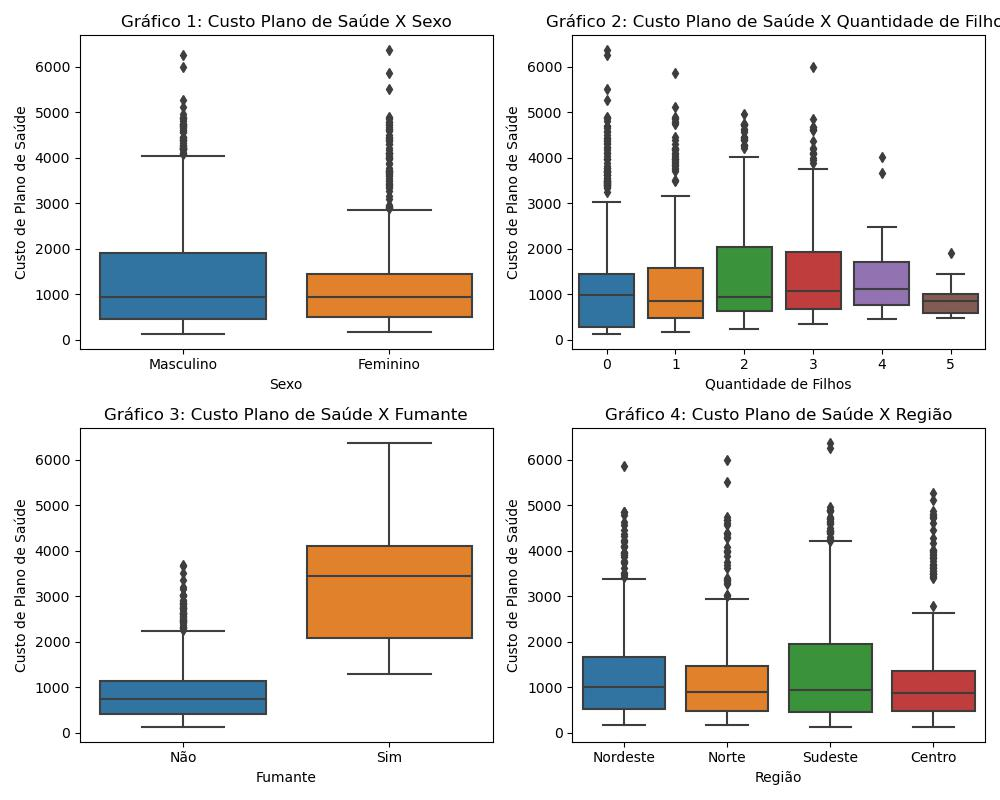

Ótimização de Custos de Plano de Saúde
Contextualização e Objetivos
Uma empresa do ramo alimentício tem mais de 20 mil colaboradores em todo o Brasil. Com o passar dos anos, a empresa percebeu um aumento no custo do plano de saúde com seus colaboradores. Como forma de entender esse comportamento, a gerência de Benefícios e Bem Estar da Diretoria de Pessoas conduziu uma pesquisa interna com um grupo de 1.338 colaboradores sorteados aleatoriamente.
A gerência acredita que fatores como fumo e obesidade podem estar relacionados com o maior uso do plano de saúde, o que acaba elevando os custos. Portanto, os colaboradores da pesquisa responderam características pessoais como o Índice de Massa Corpórea (IMC), Qte de Filhos e se fazem uso de cigarros.
Com base nessas informações, temos como objetivos encontrar as seguintes respostas:
- Quais fatores estão mais relacionados com o Custo do Plano de Saúde na empresa?
- Que tipo de ações preventivas a empresa pode fazer de forma a diminuir esse custo?
A base possui as seguintes variáveis:
- Idade - Idade do colaborador (Quantitativa)
- Sexo - Sexo do colaborador (Qualitativa)
- IMC - Índice de Massa Corporal do colaborador (Quantitativa)
- Qte_Filhos - Qte de filhos que o colaborador tem (Quantitativa)
- Fumante - Flag se o colaborador é fumante ou não fumante (Qualitativa)
- Região - Região do Brasil onde o colaborador mora (Qualitativa)
- Custo_Saude - Custo de Plano de Saúde que esse colaborador tem (Quantitativa)
Análise Descritiva
Dentro da amostra coletada podemos observar:
- Há colaboradores entre 18 a 64 anos. Sendo que metade possui mais que 39 anos;
- Apenas cerca de 20% dos colaboradores estão dentro do peso considerado normal, enquanto os outros 80% apresentam algum nível de desvio. Desses 80%, 29% estão classificados com sobrepeso, e o restante é afetado por diferentes graus de obesidade;
- Há colaboradores que têm 5 filhos, assim como há colaboradores que não têm filhos;
- O custo médio do plano de saúde é de
R$ 1327,04. Metade dos colaboradores custam menos queR$ 938,200, porém há colaboradores custandoR$ 6377,04.
Análise Exploratória
O histograma é uma ferramenta poderosa para visualizar padrões, tendências e variações em um conjunto de dados, permitindo uma compreensão rápida e intuitiva da distribuição dos valores. O histograma abaixo mostra como está a distribuição do custo do plano de saúde dos colaboradores, no gráfico podemos observar que grande parte dos colaboradores tem um custo abaixo dos R$ 1000,00, e estão bem distruidos até os R$ 2000,00 com alguns poucos acima dos R$ 4000,00.
Como observado na análise descritiva, aproximadamente metade dos colaboradores desta amostra possui menos de 39 anos, o que poderia sugerir que a despesa do plano de saúde estaria igualmente distribuída nessa faixa etária. Entretanto, ao analisar a linha vermelha no gráfico abaixo, que indica o percentual acumulado de cada faixa etária, percebe-se que os grupos com menos de 39 anos gastam apenas 37% do total de recursos destinados ao plano de saúde. Isso indica uma distribuição desigual de custos, com outras faixas etárias contribuindo de forma mais significativa para o montante global. Essa análise destaca a importância de considerar diferentes grupos etários ao planejar os gastos do plano de saúde e pode oferecer insights para futuras estratégias de otimização e alocação de recursos.
Como visto na análise descritiva anteriormente, cerca de 80% dos colaboradores estão acima do peso normal, é normal pensar que eles custariam mais para o plano de saúde. Como observado no gráfico abaixo eles custeam cerca de 85% do valor total, sendo que os colaboradores classificados com "Obesidade de grau I" são os mais custosos (31,75% da verba) entre eles.
O gráfico de boxplot é uma representação visual compacta e informativa que mostra a distribuição estatística de um conjunto de dados numéricos. Ele exibe a mediana, os quartis, a presença de outliers e a dispersão dos dados, permitindo uma rápida compreensão da distribuição e identificação de informações importantes, tornando-se uma ferramenta valiosa na análise exploratória de dados. Abaixo temos alguns gráficos de boxplots relacionando para visualizar como está distribuida o Custo de Plano de Saúde com os fatores categoricos da base de dados ( Sexo do colaborador, Quantidade de filhos, Fumante e Região em que o colaborador vive) No gráfico 1 comparando os custos do plano de saúde entre homens e mulheres. Vemos que as caixas estão no mesmo nível, indicando que não tem diferença no custo do plano, além de terem a mesma mediana próximo de `R$ 1000,00`, como visto na analise descritiva anteriormente. No gráfico 2 estamos comparando o custo do plano de saúde com a quantidade de filhos dos colaboradores. Nele podemos observar que os colaboradores que possuem 5 filhos tem um custo mais concentrado em torno dos `R$ 1000,00`, contendo apenas um outlier que mal chega a custar `R$ 2000,00` para a empresa. Já colaboradores com menos que 5 filhos possam variar muito e chegar a custar `R$ 4000,00`, sem contar com os outliers chegando a mair de `R$ 6000,00`. **No gráfico 3 observamos como os colaboradores fumantes custam mais para o plano de saúde do que para os colaboradores que não são fumantes.** No gráfico 4 não vemos nenhuma região que custe mais para o plano de saúde.
Correlação com o custo do plano de saúde
Variaveis Numericas
Buscaremos entender como as variáveis explicativas se relacionam com o custo do planos de saúde, a fim de identificar padrões, tendências ou efeitos que possam ser relevantes para nossas análises ou tomadas de decisão. Na sessão anterior vimos alguns gráficos interagindo o Custo do plano de saúde (vamos chama-la de variável reposta) e as demais variáveis que chamaremos que variavéis explicativas. Nesses gráficos tiramos algumas conclusões sobre algumas variáveis estarem impactando com o custo do plano de saúde, mas não podemos fazer isto baseado apenas no visual, existem alguns testes estatísticos que usamos para comprovar a correlação entre elas. A correlação pode ser positiva, negativa ou neutra, e seu valor varia entre -1 e 1, indicando a força e a direção dessa associação.
É importante ressaltar que correlação não implica causalidade. A existência de uma correlação entre duas variáveis não garante que uma cause a outra. Elas podem estar relacionadas indiretamente ou serem influenciadas por uma terceira variável desconhecida.
Para correlacionar as variáveis numericas utilizaremos a correlação de Pearson, uma medida estatística que avalia a relação linear entre duas variáveis quantitativas. O coeficiente de correlação varia entre -1 e 1, onde -1 indica uma correlação negativa perfeita, 1 indica uma correlação positiva perfeita e 0 indica ausência de correlação. É amplamente utilizado em pesquisas científicas e análises estatísticas para examinar a associação entre variáveis contínuas. No entanto, a correlação não implica causalidade, e sua interpretação deve considerar a linearidade das relações e a sensibilidade a outliers
Abaixo vemos a representação dessa correlação com um mapa de calor. Ao observar a primeira linha onde está o "Custo do plano de saúde" observamos que ela quase não tem correlação com as demais variáveis, sendo a correlação com a "Quantidade de filhos" quase 0 (zero).
Variáveis Categóricas - Fumante
Para comparar se fumar aumenta o "Custo do plano de saúde" compararemos as médias de custos dos colaboradores "fumantes" e "não fumantes". Se a diferença dessas médias for significativamente diferente, diremos que o custo do plano de saúde tem correlação com ser fumante, se não houver diferença significativa entre as médias não há correlação:
- Médias de custo do plano de saúde para colaboradores fumantes:
R$ 3205,02. - Médias de custo do plano de saúde para colaboradores NÃO fumantes:
R$ 843,42
Observamos que colaboradores que fumam têm, em média, custos maiores que os que não fumam, mas será mesmo que esta diferença de custo é estatisticamente significativa? O teste t de Student é um teste estatístico paramétrico usado para comparar as médias de duas amostras independentes. Para realizar o teste t, compararemos as hipóteses:
- Hipótese Nula (H0): As médias dos custos para o plano de saúde entre fumantes e não fumantes são significativamente iguais.
- Hipótese Alternativa (H1): As médias dos custos para o plano de saúde entre fumantes e não fumantes são significativamente diferentes.
Para decidir se rejeitamos ou não a hipótese nula (H0), com base nos resultados do teste t, geralmente calculamos o valor-p.
- Se o valor-p for menor que um nível de significância pré-determinado (geralmente 0,05 ou 0,01), rejeitamos a hipótese nula (H0).
- Se o valor-p for maior que o nível de significância, não temos evidências suficientes para rejeitar H0, e não podemos afirmar com confiança que as médias das duas amostras são diferentes.
Não irei entrar em detalhes sobre os cálculos, mas com da função ttest_ind() do pacote stats, encontramos um p-valor = 8,27. Com um p-valor > 0,05 temos evidências para rejeitar H0. Ou seja, o colaborador fumar realmente implica em um aumento no valor do plano de Saúde.